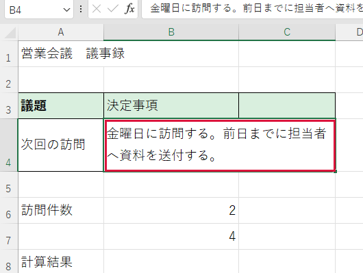

行の高さ・列の幅を変更したい


文字が収まるように表の寸法を調整します。
操作手順
- 高さを変えたい行の番号を左端で探します。番号の下の境界にマウスを置くと上下向きの矢印になります。
- その境界を下へドラッグします。マウスを放すと行全体が高くなります。
- 幅を変える場合は、上端の列記号（A、Bなど）の右境界にマウスを置きます。左右向きの矢印になります。
- 境界を右へドラッグします。列全体が広がります。
できたか確認
目的の文章と隣の欄が読めるか、印刷時にも収まるかを確認します。
注意点
セル一つだけのサイズは変えられません。既定の帳票では作業用コピーで調整してください。